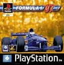
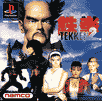
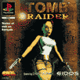
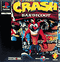
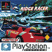
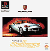
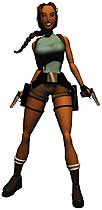
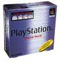

Vous
en voulez encore??! Pas de problèmes, la Playstation
a
encore beacoup de chiffres pour vous! :o)
Japon
: le prix de vente de la PlayStation descend sous la barre des 20
000 yens.
Prix de vente conseillé
: 19 800 yens.
Le total cumulé de la production et
de la livraison de PlayStation atteint 7,2 millions
d'unités au
niveau mondial. Pour Sony Computer Entertainment France,
l'été 96 marque le début
d'une stratégie de communication axée sur le Football.
La signature PlayStation est présente
massivement lors des grandes rencontres
nationales et internationales. Dès
lors, SCE France devient le premier
annonceur en terme de visibilité.
Lancement européen de Formula One
qui se vend à plus de
200 000 exemplaires
en France.

Les livraisons de PlayStation attegnent 9
millions d'unités au niveau mondial.
Lancement européen de Tekken 2, le
best-seller signé Namco, qui se vendra à plus
de 2 millions d'exemplaires
dans le monde dont 2 millions d'exemplaire en France.

Lancement européen de Tomb Raider
qui devient dès sa sortie le jeu PlayStation le plus
vendu en France avec près de 250
000 unités. Nouveau record!

Lancement du premier volet de la saga Crash
Bandicoot qui se vendra à près de 2,4
millions
dans le monde dont
150 000 en France.

SCEE annonce le lancement de la gamme de
jeux Platinum PlayStation. La gamme
Platinum est constituée des jeux
phares sortis sur PlayStation depuis
plus de un an. Les jeux de la gamme Platinum
sont au prix de vente
conseillé de 149
francs. Le premier jeu à sortir sous cette
appellation est Ridge Racer. Final
Fantasy VII de Squaresoft
dépasse les 3,5
millions d'unités vendues au Japon.

Le total cumulé de la production et
de la livraison de
PlayStation atteint 12
millions d'unités au niveau mondial.
SCEE annonce la reconduction de l'alliance
stratégique à long terme
avec Namco Ltd, éditeur de Tekken
2, Soul Blade et Rage
Racer, dans tous les territoires qui fonctionnent
avec le système vidéo PAL.
Namco, Sony Computer Entertainment et Polygon
Pictures annoncent la
création d'un studio d'informatique
graphique de dimension
internationale appelé Dream Pictures
Studio Inc.
Lancement du Net Yaroze sur le marché
européen.
Le Net Yaroze est un kit de développement
de jeux sur PlayStation
destiné au grand public. Assez cher,
mais tellement cool! :o)
Le total cumulé de la production et
de la livraison de consoles PlayStation
atteint 13,5 millions
d'unités fin mars 1997.
SCEE ramène le prix de vente conseillé
de la PlayStation en France
de 1 490 à 990 francs. Etats-Unis
:
Le prix de vente conseillé
de la PlayStation passe de 199 à
149 dollars US.
Le total cumulé de la production et
de la livraison de consoles PlayStation
atteint 16 millions
d'unités.
SCEE conclut un accord de plus de 10
millions de dollars US par an et devient
Partenaire Officiel de la Ligue des Champions
jusqu'en l'an 2000.
Sortie du jeu Porsche Challenge vendu à
près de 200 000 exemplaires en France.
La capacité de production de consoles
PlayStation exclusivemement fabriquées au
Japon augmente. La production mensuelle
passe de 1 à 1,5 million d'unités(!!!).

Sony Computer Entertainment Europe annonce
son tout dernier
développement en matière d'accessoires
pour la PlayStation :
la manette Analogique. La PlayStation devient
Partenaire Officiel de l'écurie
de Formule 1 Prost Grand Prix.
Sony Computer Entertainment Europe acquiert
les équipes de
développement de jeux de la société
Millenium. Millenium devient Sony
Computer Entertainment Cambridge Studios.
MediEvil est le premier
projet issu du studio et sortira en octobre
1998.
Lancement de V-Rally, le jeu de course le
plus vendu en France à
l'époque avec près de 300.000
unités.
SCEE annonce que la licence de Tomb Raider,
dont le personnage
principal est Lara Croft, est désormais
exclusivement réservée à
la console PlayStation. SCEE lance
le Value Pack qui comprend la
PlayStation, deux manettes et une carte
mémoire, au prix conseillé de 1 490 francs.


Le total cumulé de la production et
de la livraison de PlayStation
atteint 22,5 millions
d'unités.
SCEE remporte le "Golden Joystick Award"
de la meilleure société
de services et de conseils en informatique,
du jeu le plus original pour
Parappa The Rapper et de la meilleure publicité
pour Tekken 2.
Lancement de Final Fantasy VII sur le marché
des territoires qui
fonctionnent avec le système vidéo
PAL.
SCEE annonce que les ventes de FFVII ont
déjà dépassé le
demi-million d'unités
en Europe dont 200 000 en France.